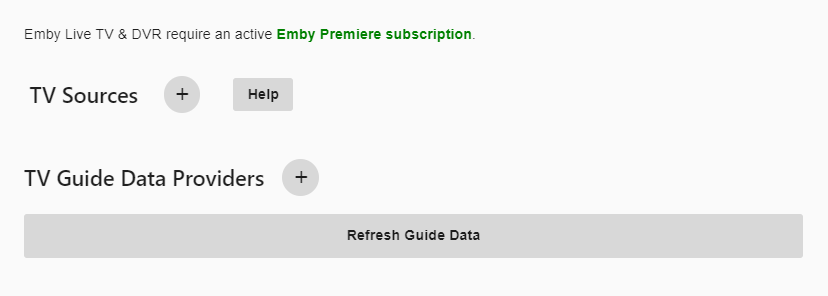

HDHomeRun Einrichtung
Emby bietet native Unterstützung für aktuelle Silicon Dust HDHomeRun Netzwerktuner (müssen DLNA unterstützen, was alle Modelle ab 2015 sollten). Im Gegensatz zu anderen Tuner-Marken arbeiten HDHomeRun-Tuner als eigenständige Geräte, die mit Ihrem Netzwerk verbunden sind. Es ist nicht notwendig, offene PCI-Steckplätze in Ihrem Server oder freie USB-Ports zu haben. Da es sich um ein eigenständiges Gerät handelt, können Sie diese in unmittelbarer Nähe zu Ihrer OTA-Antenne oder Kabelanschluss installieren. Solange Sie das Gerät mit Ihrem Ethernet-Heimnetzwerk verbinden können, ist die Installation überall in Ihrem Zuhause möglich. Silicon Dust stellt sowohl OTA (Over the Air)-Modelle als auch Kabeltuner (unter Verwendung von Kabelkarten) her, um DRM-freie, digitale Kabelabonnementkanäle zu empfangen.
In den meisten Fällen kann Emby Ihre HDHomeRun-Geräte automatisch in Ihrem Netzwerk erkennen, ohne dass eine Konfiguration erforderlich ist. Sie können auch manuell einen Tuner einrichten.
Die folgende Anleitung geht davon aus, dass Sie bereits Ihr HDHomeRun in Ihrem Netzwerk eingerichtet haben und es mit Ihrem Kabel oder Ihrer Antenne verbunden haben.
Hinweis: Wenn Sie ein älteres HDHomeRun-Modell besitzen, das DLNA nicht unterstützt oder keinen eingebauten Webserver hat, führen Sie bitte diese Schritte aus, bevor Sie fortfahren.
Öffnen Sie das Server-Dashboard und klicken Sie auf die Menüoption Live TV auf der linken Seite. Wenn Sie einen Teil von Live TV noch nicht eingerichtet haben, sollte die Seite so aussehen:

Klicken Sie auf das Pluszeichen neben TV-Quelle, um unseren ersten Tuner hinzuzufügen. Dann wird uns ein Bildschirm angezeigt, der uns erlaubt, den Typ des hinzuzufügenden Tuners auszuwählen. Wählen Sie HD HomeRun aus der Dropdown-Liste der Auswahlmöglichkeiten und klicken Sie auf die Schaltfläche Speichern.

Emby durchsucht Ihr Netzwerk und zeigt alle HDHomeRun-Geräte an, die es im Netzwerk findet. Hier ist ein Beispiel, das zwei Primes und ein Quatro zeigt, die automatisch gefunden wurden.

In diesem Beispiel werden wir OTA (Over the Air) mit dem HDHomeRun Quatro einrichten. Klicken Sie auf das Quatro (3. in dieser Liste).
Emby beginnt mit der Einrichtung dieses Tuners und bietet Ihnen die Möglichkeit, einige Optionen festzulegen, einschließlich: Die Möglichkeit, alle Kanäle oder nur FAVORITEN (bereits auf dem Tuner selbst konfiguriert) zu importieren. Siehe die Konfiguration der HDHomeRun-Favoriten unten für weitere Informationen zur Verwendung von Favoriten.
Die Möglichkeit, Hardware-Transcoding auf Ihrem Tuner zu verwenden. Hinweis: Dies wird nur auf HDHomeRun EXTEND-Modellen unterstützt.

In diesem Beispiel, das ein Quatro verwendet, werden wir die Einschränkung auf Favoriten-Kanäle aktivieren und die Hardware-Transcoding-Option deaktivieren. Nachdem wir unsere Optionen festgelegt haben, klicken Sie auf die Speichern-Schaltfläche, und wir haben unseren ersten Tuner hinzugefügt.

HDHomeRun Favoriten-Einrichtung
Um Favoriten mit Ihrem HDHomeRun-Tuner verwenden zu können, müssen Sie diese außerhalb von Emby einrichten. Dies tun Sie, indem Sie die integrierte Web-App auf Ihrem Tuner in einem Webbrowser öffnen und dann die Menüoption Channel Lineup auswählen. Sie können auch einfach die URL in Ihren Browser eingeben, die ähnlich aussieht wie diese:
http://192.168.100.23/lineup.html
Beachten Sie, dass dies die IP des Tuners ist, wie im obigen Beispiel konfiguriert. Einmal im Bildschirm der Kanalaufstellung wird es ähnlich aussehen wie dieses mit Ihren aufgelisteten Kanälen.

In diesem Bild ist alles mit dem gelben Stern als Favorit markiert und wird vom Kanalimport oben verwendet. Sie können die anderen beiden Optionen verwenden, die unselektiert (leer) oder X als Status für den eigenen Gebrauch sind. X wären deaktivierte Kanäle. Leer könnten Kanäle sein, die Sie noch nicht entschieden haben. Dies ist eine wirklich nützliche Möglichkeit, Ihre Senderliste zu filtern. Viele Kabelanbieter liefern sowohl HD- als auch SD-Versionen derselben Kanäle. Mit dieser Methode können Sie nur die HD-Kanäle als Favoriten markieren. Sie können Kanäle in fremden Sprachen, Shopping-Kanäle, Infomercial-Kanäle oder andere Kanäle, die Sie nicht von Emby laden lassen möchten, einfach ignorieren (nicht als Favoriten markieren).